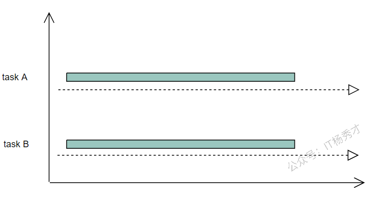
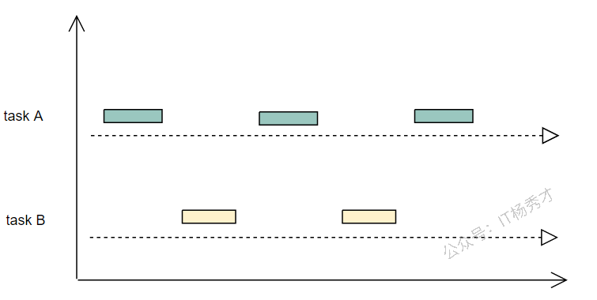

📝 基本概念
- 进程：程序是指编译过的、可执行的二进制代码。进程指正在运行的程序。进程包括二进制镜像，加载到内存中，还涉及很多其他方面：虚拟内存实例、内核资源如打开的文件、安全上下文如关联的用户，以及一个或多个线程。
- 线程：线程是进程内的活动单元，每个线程包含自己的虚拟存储器，包括栈、进程状态如寄存器，以及指令指针。在单线程进程中，进程即线程，一个进程只有一个虚拟内存实例，一个虚拟处理器。在多线程的进程中，一个进程有多个线程，由于虚拟内存是和进程关联的，所有线程会共享相同的内存地址空间
- 协程：协程可以理解为一种轻量级线程，与线程相比，协程不受操作系统调度。协程调度器完全由用户应用程序提供，协程调度器按照调度策略把协程调度到线程中运行。
提示
goroutine、线程、进程到底怎么区分
很多场景下，面试官并不是要你背定义，而是想确认你是否知道三者的调度者、资源成本和隔离级别。
| 维度 | 进程 | 线程 | goroutine |
|---|---|---|---|
| 调度主体 | 操作系统 | 操作系统 | Go 运行时调度器 |
| 地址空间 | 独立 | 共享所属进程地址空间 | 共享所属进程地址空间 |
| 创建/切换成本 | 高 | 中 | 低 |
| 初始栈 | 通常较大 | 通常较大 | 很小，按需增长 |
| 通信方式 | IPC | 共享内存、锁 | channel、共享内存、锁 |
| 典型数量级 | 少 | 中 | 可非常多 |
可以这样理解：
- 进程强调资源隔离，稳定但重
- 线程强调同进程内并发执行，切换比进程轻
- goroutine 是 Go 在用户态进一步做的抽象，核心目标是让开发者以更低成本启动海量并发任务
goroutine 不是“Go 版线程”，它更接近“由 Go runtime 托管的轻量任务”。它最终仍然要映射到操作系统线程上运行，只是中间多了一层 Go 自己的调度。
🔄 并发与并行
很多开发者对于并发和并行的概念还比较模糊，其实只需要根据一点来判断即可：能不能同时运行。
- 并行：两个任务能同时运行就是并行
- 并发：不能同时运行，而是每个任务执行一小段，交叉执行，这种模式就是并发

并行（Parallelism）：两个任务一直运行，切实同时运行着。要注意并行的话一定要有多个 CPU 核心的支持，因为只有一个 CPU 的话，同一时间只能跑一个任务。

并发（Concurrency）：两个任务，每次只执行一小段，这样交叉的执行，就是并发模式。并发模式在单核 CPU 上是可以完成的。
🔒 互斥锁与读写锁
🔐 互斥锁sync.Mutex
互斥锁保证同一时间只有一个 goroutine 能进入临界区，适合写多读少的场景。
|
|
注意事项：
- 避免重复加锁而不解锁
- 锁未释放前不能再次访问需要该锁的代码（mutex 是不可重入锁，自己加锁后没有释放锁，继续加锁，就死锁了）
- 避免对未锁定的互斥锁解锁（会导致 panic）
- goroutine 被加锁后需要及时解锁否则其他 goroutine 无法拿到锁
- 如果要保证两个协程同一个锁，那么应该传递指针，不要拷贝 mutex
💀 死锁
提到锁，就有一个绕不开的话题：死锁。死锁就是一种状态，当两个或以上的 goroutine 在执行过程中，因争夺共享资源处在互相等待的状态，如果没有外部干涉将会一直处于这种阻塞状态。
死锁场景一：Lock/Unlock 不成对
最常见的场景就是对锁进行拷贝使用：
|
|
运行结果：
|
|
如果将带有锁结构的变量赋值给其他变量，锁的状态会复制。复制后的新锁拥有了原来的锁状态，那么在 copyMutex 函数内执行 mu.Lock() 的时候会一直阻塞，因为外层的 main 函数已经 Lock() 了一次，但是并没有机会 Unlock()，导致内层函数会一直等待 Lock()，而外层函数一直等待 Unlock()，这样就造成了死锁。
死锁场景二：循环等待
A 等 B，B 等 C，C 等 A，循环等待：
|
|
运行结果：
|
|
两个 goroutine，一个先锁 mu1，再锁 mu2，另一个先锁 mu2，再锁 mu1，但是它们进行第二次加锁操作的时候，彼此等待对方释放锁，这样就造成了循环等待，一直阻塞，形成死锁。
避免死锁的建议：
- 尽量避免锁拷贝，并且保证 Lock() 和 Unlock() 成对出现
- 尽量养成如下使用习惯：
|
|
📖 读写锁sync.RWMutex
读写锁指读操作和写操作分开，可以分别对读操作和写操作进行加锁，一般用在大量读操作、少量写操作的情况。
|
|
读写锁的使用原则：
- 同时只有一个 goroutine 能够获得写锁
- 同时可以有任意多个 goroutine 获得读锁
- 同时只能存在写锁定和读锁定（读和写互斥）
通俗理解就是可以多个 goroutine 同时读，但是只有一个 goroutine 能写，共享资源要么在被一个或多个 goroutine 读取，要么在被一个 goroutine 写入，读写不能同时进行。
⏳ 等待组sync.WaitGroup
在 Go 语言并发编程中，经常需要等待多个 goroutine 执行完成。sync.WaitGroup 就是用于等待一组 goroutine 完成任务的同步原语。
sync.WaitGroup 是一个结构体，内部维护着一个计数器，通过三个方法配合使用：
| 方法 | 作用 |
|---|---|
Add(delta int) |
计数器增加 delta |
Done() |
计数器减 1，等价于 Add(-1) |
Wait() |
阻塞当前协程，直到计数器归零 |
💡 基本使用
|
|
运行结果：
|
|
注意：sync.WaitGroup 的计数器不能为负数，否则会 panic。
⏱️ 一次执行sync.Once
sync.Once 保证某个操作只会执行一次，并且是并发安全的。无论有多少个 goroutine 同时调用它，都不会重复执行。
常用于单例模式、配置文件加载等只需要执行一次的场景。
|
|
核心方法：
|
|
f：要执行的函数- 多个 goroutine 并发调用
Do时，只有第一次调用会执行f，后面的调用会直接跳过 - 保证了并发安全（内部用了互斥锁和标志位）
注意事项：
Do里传入的函数必须是幂等的（即多次调用不会出错）- 不能在
Do的函数里再次调用同一个once.Do（会死锁） - 不能直接复制
sync.Once，应始终用指针或包级变量
🔀 sync.Once 与 init() 的区别
有时候我们使用 init() 方法进行初始化。init() 方法是在其所在的 package 首次加载时执行的，而 sync.Once 可以在代码的任意位置初始化和调用，是在第一次用到它的时候才会初始化。
sync.Once 最大的作用就是延迟初始化。设想一下，如果是在程序刚开始就加载配置，若迟迟未被使用，则既浪费了内存，又延长了程序加载时间，而 sync.Once 就刚好解决了这个问题。
🔔 条件变量sync.Cond
sync.Cond 是 Go 里的条件变量，用来在多个 goroutine 之间进行等待和通知。它本身不控制互斥，而是依赖于一个锁（sync.Mutex 或 sync.RWMutex）来保护共享状态。
简单来说：
当某个条件不满足时，goroutine 可以等待； 当另一个 goroutine 改变了条件并发出信号，等待的 goroutine 才会继续执行。
🔧 创建条件变量
|
|
| 方法 | 作用 |
|---|---|
cond.Wait() |
等待条件成立，释放锁并阻塞，直到被 Signal() 或 Broadcast() 唤醒，然后会重新加锁返回 |
cond.Signal() |
唤醒一个正在等待的 goroutine |
cond.Broadcast() |
唤醒所有正在等待的 goroutine |
📋 生产者-消费者示例
|
|
注意事项：
- 必须配合锁使用：
Wait()调用前需要加锁，它会在内部自动释放锁并阻塞，唤醒后会重新加锁 - 要用循环检查条件：因为即使被唤醒，条件也可能依旧不满足（虚假唤醒）
⚛️ 原子操作sync/atomic
所谓原子操作就是这一系列的操作在 CPU 上执行是一个不可分割的整体，显然要么全部执行，要么全部不执行，不会受到其他操作的影响，也就不会存在并发问题。
- 提供无锁的原子操作，比如原子加减、交换、比较并交换（CAS）
- 适合需要高性能并发计数、标志位控制的场景
🔄 atomic 与 mutex 的区别
- 使用方式：通常 mutex 用于保护一段执行逻辑，而 atomic 主要是对变量进行操作
- 底层实现：mutex 由操作系统调度器实现，而 atomic 操作由底层硬件指令支持，保证在 CPU 上执行不中断。所以 atomic 的性能也能随 CPU 的个数增加线性提升
📜 常见方法
|
|
T 的类型是 int32、int64、uint32、uint64 和 uintptr 中的任意一种。
💻 示例
|
|
100 个 goroutine，每个 goroutine 都对 sum +1，最后结果为 100。
🎯 atomic.Value
上面展示的 AddT、StoreT 等方法都是针对基本数据类型做的操作。如果想对多个变量进行同步保护，例如对一个 struct 这样的复合类型用原子操作，Go 语言里的 atomic.Value 支持任意接口类型进行原子操作。
atomic.Value 提供了以下方法：
| 方法 | 作用 |
|---|---|
Load() |
从 Value 读出数据 |
Store(val any) |
向 Value 写入数据 |
Swap(new any) |
用 new 交换 Value 中存储的数据，返回原先的旧数据 |
CompareAndSwap(old, new any) |
比较 Value 中存储的数据和 old 是否相同，相同则替换为 new，返回 true |
|
|
运行结果：
|
|
🗺️ 并发安全映射 sync.Map
Go 语言内置的 Map 并不是并发安全的，在多个 goroutine 同时操作 map 的时候，会有并发问题。
⚠️ 普通 map 的并发问题
|
|
运行结果：
|
|
程序报错了，说明 map 不能同时被多个 goroutine 读写。
解决方案一：使用互斥锁保护 map
|
|
🗺️ sync.Map 的基本使用
Go 语言 sync 包提供了开箱即用的并发安全版 map——sync.Map，在 Go 1.9 引入。sync.Map 不用初始化就可以使用，内置了诸多操作方法：
| 方法 | 作用 |
|---|---|
Store(key, value) |
写入键值对 |
Load(key) |
读取值，返回 (value, ok) |
LoadOrStore(key, value) |
读取或写入，返回 (value, loaded) |
Delete(key) |
删除键值对 |
Range(f func(key, value) bool) |
遍历所有键值对 |
|
|
运行结果：
|
|
注意：
sync.Map没有提供获取 map 数量的方法，需要在遍历时自行计算sync.Map为了保证并发安全有一些性能损失，因此在非并发情况下，使用原生 map 相比使用 sync.Map 会有更好的性能
sync.Map 的核心特点
- 无锁读：大部分读操作直接命中
read，不需要加锁。 - 读写分离：
read负责热点读，dirty承接新写入和 read 未命中的数据。 - 延迟删除：key 在
read中时，多数删除是“标记删除”，不是立刻物理删除。 - 空间换时间：内部维护
read和dirty两张表，用更多空间换更少锁竞争。 - 自动提升：当
read连续未命中到一定程度后，dirty会提升成新的read。
🔧 sync.Map 核心原理
📊 数据结构
|
|
read：通过atomic.Value原子保存readOnly，大多数读请求都走这里。dirty：普通 map，写操作和 read 未命中后的补充读取会走这里，需要加锁。misses：记录从read未命中并回退到dirty的次数，用来判断是否该把dirty提升为新的read。
`entry.p`` 有三种状态：
- 指向真实 value：正常状态。
nil：逻辑删除状态，说明这个 key 被标记删除了。expunged：更彻底的删除标记，表示这个 key 只留在read中，不在dirty中。
sync.Map 的整体结构如下：

有一个很关键的点：read.m 和 dirty 这两张表里，相同 key 对应的 value 往往不是两份数据，而是同一个 entry 指针。因此改了 entry.p，两边看到的是同一份结果。
⬆️ dirty 提升
dirty 提升的目的，是把最近经常需要加锁访问的数据同步成新的只读视图，减少后续锁竞争。
触发时机可以简单记成一句话：read 老是读不到，misses 又越来越多，就该让 dirty 顶上来了。
|
|
提升后会发生三件事：
dirty直接成为新的read- 原来的
dirty被置为nil misses清零，等待下一轮统计
📖 读取流程
|
|
- 先从
read无锁读取。 - 如果
read没命中，并且amended=true，说明dirty里有 read 没有的数据，这时才加锁去dirty查。 - 只要走了
dirty，就会累计一次miss。 - 当
misses >= len(dirty)时，dirty会被提升成新的read。
读取流程图：

💾 存储流程
|
|
- 如果 key 已经存在于
read，且 entry 没被expunged，会优先尝试无锁更新。 - 如果 key 处于
expunged状态，就不能只改read，因为这说明 dirty 和 read 的 key 集已经分叉了，必须加锁把这个 key 重新并回 dirty。 - 如果 key 是全新的：
dirty == nil时，要先根据read重建 dirty；- 然后再把新 key 插入 dirty，并把
read.amended设为true。
p == expunged 时的结构可以用下面这张图理解：

存储流程图：

🗑️ 删除流程
|
|
- 如果 key 在
read中，删除通常是延迟删除：- 只是把
entry.p标成nil - 并没有立刻从 map 结构里把这个 key 移除
- 只是把
- 如果 key 不在
read中，而是在dirty中，才会直接delete(m.dirty, key)做物理删除。
所以可以把它记成：
- 从 read 删除：延迟删除
- 从 dirty 删除：直接删除
删除流程图：

🔁 Range 流程
Range 的处理方式和前面几个方法不太一样。它的目标不是“尽量只看 read”，而是要确保遍历到 map 中所有当前有效的 key。
核心逻辑是：
- 如果
read.amended=false，说明dirty里没有 read 没有的数据，直接遍历read就够了。 - 如果
read.amended=true，说明dirty里有 read 里没有的新 key，这时会先把dirty提升成新的read，再遍历。
|
|
Range 流程图：

🔄 p 的状态变化
sync.Map 里最容易讲清楚底层行为的地方，就是 entry.p 在 正常值 -> nil -> expunged -> 恢复 之间如何切换。
可以按一条具体链路来理解：
- 一开始向空的
sync.Map写入key1/value1和key2/value2，新数据先进入dirty。

- 连续读取这些 key，
read多次未命中，misses达到阈值后，dirty提升为read，dirty=nil。

- 删除
key1后，因为它存在于read中，所以只是把key1对应的p标成nil，属于逻辑删除。

- 这时如果再插入
key3，由于dirty为空，运行时会基于read重建dirty。重建过程中，原来p=nil的key1会被进一步标为expunged，表示这个 key 只留在read中，不再进 dirty。

- 如果之后又重新
Store(key1, value0)，发现它在read中但状态是expunged，就不能只操作read，而必须先把状态从expunged恢复，再重新加入dirty，最后更新值。

这套状态设计的核心目的，是把“是否需要加锁同步 dirty”区分得更细：
p == nil：可以理解为“逻辑删了，但 dirty 可能还跟得上”p == expunged：可以理解为“这个 key 已经和 dirty 脱钩了，再操作它必须带上 dirty 一起处理”
✅ sync.Map 总结
sync.Map的核心不是“简单地给 map 加一把大锁”，而是通过read + dirty两张表做读写分离。- 读路径优先无锁命中
read，这是它在读多写少场景里性能好的根本原因。 - 写路径主要落在
dirty，并在必要时重建或同步dirty。 - 删除分成延迟删除和直接删除两种，取决于 key 当前位于
read还是dirty。 entry.p的nil / expunged / 正常值三种状态，是理解sync.Map行为的关键。
💡 面试要点：sync.Map 的适用场景
- 读多写少
- key 集合相对稳定
- 写多读少时性能不如加锁的 map
🏊 对象池sync.Pool
sync.Pool 是在 sync 包下的一个内存池组件，用来实现对象的复用，避免重复创建相同的对象，造成频繁的内存分配和 GC，以达到提升程序性能的目的。
虽然池子中的对象可以被复用，但是 sync.Pool 并不会永久保存这个对象，池子中的对象会在一定时间后被 GC 回收，这个时间是随机的。所以，用 sync.Pool 来持久化存储对象是不可取的。
另外，sync.Pool 本身是并发安全的，支持多个 goroutine 并发地往 sync.Pool 存取数据。
📖 基本使用方法
关于 sync.Pool 的使用，一般是通过三个方法来完成的：
| 方法 | 说明 |
|---|---|
New |
sync.Pool 的构造函数，用于指定 sync.Pool 中缓存的数据类型，当调用 Get 方法从对象池中获取对象的时候，对象池中如果没有，会调用 New 方法创建一个新的对象 |
Get |
从对象池取对象 |
Put |
往对象池放对象，下次 Get 的时候可以复用 |
|
|
运行结果：
|
|
第一次调用 pool.Get().(*Student) 时，由于池子内没有对象，所以会通过 New 方法创建一个。注意：pool.Get() 返回的是一个 interface{}，所以我们需要断言成对应类型。使用完对象后，调用 Put 方法将对象放回池子内，可以看到两次取出的对象地址是同一个，说明 sync.Pool 有缓存对象的功能。
♻️ 对象复用注意事项
如果取出对象后进行修改，需要在放回池子之前进行 Reset 操作，将对象值复原：
|
|
🎯 使用场景
-
降低 GC 压力：
sync.Pool主要是通过对象复用来降低 GC 带来的性能损耗，所以在高并发场景下，由于每个 goroutine 都可能过于频繁地创建一些大对象，造成 GC 压力很大。所以在高并发业务场景下出现 GC 问题时，可以使用sync.Pool减少 GC 负担 -
不适合存储带状态的对象：比如 socket 连接、数据库连接等，因为里面的对象随时可能会被 GC 回收释放掉
-
不适合需要控制缓存对象个数的场景：因为 Pool 池里面的对象个数是随机变化的，池子里的对象是会被 GC 的，且释放时机是随机的